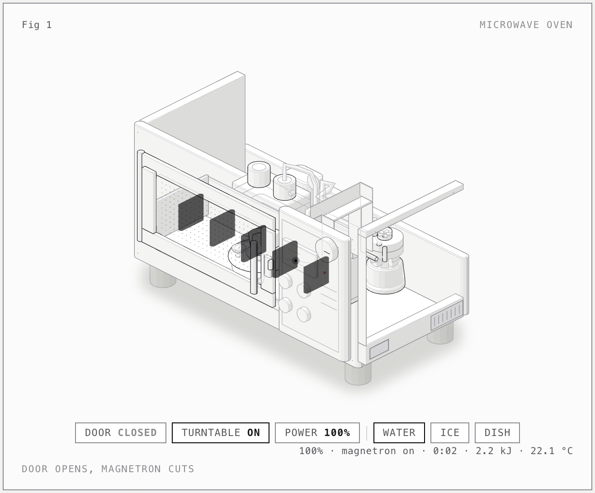

16 October 2026 · Agentic task loop · interactive figure
Microwave Oven Anatomy · Splash 1.3.1
The orchestrator reached COMPLETE after 29 h 1 min in one segment, with no operator action. All 29 leaf tasks are done (16 planned at bootstrap, 6 split into smaller tasks, more added by replans and the final review), the project's verify passes 67 checks, and the final reviewer accepted all 23 requirements on its second cycle. The physics module passes all 16 hidden acceptance cases, including the frozen-block rate the Sushi attempt got wrong. The figure works in both themes, but its composition is cluttered.

What was checked
- Bootstrap was accepted on its second session: the first session spent its last response on 16,384 tokens of reasoning and wrote no files. The second wrote 23 requirements, 16 task cards and a deterministic verify.
- Each task was accepted only after the orchestrator ran verify --all and verify --task <ID> and a fresh reviewer returned ACCEPT. Reviewers returned CHANGES 6 times (T007, T007c, T007cc, T013, T015, T017). The first final review returned CHANGES and added T018 (vent clearance and an antenna close-up); the second accepted.
- verify covers model.mjs behaviour (duty cycles, door interlock, energy balance, ice rate, melt plateau, edge cases, standing wave, turntable), both page builds, headless-Chrome loads without console errors, the skill's geometry audit, the line-end check, controls by pointer and keys, the idle tour, reduced motion, and dark/light screenshots at 1440 px and 390 px plus close-ups.
- Independent check after the run: verify --all passed 67/67 in 154 s (limit 240 s); the dark and light screenshots are non-blank and show the oven with a live readout.
- Hidden acceptance cases: 16 of 16 passed through a name-only adapter that steps the model's own stepFood and powerAt at 1/30 s. The model applies the 10% ice rate during melting as well, so a 100 g block takes about 417 s at 0 °C; the brief fixes the rate only while frozen, and the cases accept either reading.
- Visual judgement (operator, not a score): the oven is recognisable and every subsystem is present, but dark panels float in front of the door, a bar sticks out to the right, and parts overlap. The Sushi attempt's figure reads more clearly.
Limits of this evidence
Splash 1.3.1 no longer loads the incoai/Qwen3.8-27B-Splash package used by the earlier Obby 3D run and asks for the MLX model of the family instead, so this run served mlx-community/Qwen3.8-27B-4bit with the DFlash2 draft. Pi's client output limit was 16,384 tokens, the same as the Sushi attempt; 27 responses reached it, nearly all of them reasoning. Splash's log shows the Neural Engine FFN split stopped at 15:11 local on 16 October (39.6 ms per layer on the Neural Engine against 36.8 ms on the GPU alone), so the last ten minutes of prefill ran on the GPU alone. The generated project, transcripts and engine logs stay on the workstation.
Configuration
The model, serving engine and agent used for this execution.
| Field | Value | Detail |
|---|---|---|
| Model · primary | Qwen 3.8 27B · primary · reasoning medium | MLX affine 4-bit, group size 64 (config.json of snapshot 10c35caafbb8) · 4 bpw |
| Checkpoint · primary | mlx-community/Qwen3.8-27B-4bit | primary model artifact |
| Model · drafter | Qwen 3.8 27B DFlash2 · drafter | — |
| Checkpoint · drafter | incoai/Qwen3.8-27B-DFlash2 | drafter model artifact · revision 015e795645c7 |
| Runtime | Splash 1.3.1 · Local OpenAI-compatible server; draft incoai/Qwen3.8-27B-DFlash2 chosen by Splash; vision on; Neural Engine FFN split at share 0.47 until Splash stopped it at 15:11 local on 16 October; sampling at Splash's defaults (no temperature set by Pi or the server; values not logged) mode | inference engine and exact build |
| Harness | Pi coding agent, driven by the task-loop orchestrator, with the anatomy skill 1.1.0 | the agent or client that drove the run |
| Hardware | Apple MacBook Pro · 64 GB unified memory | hardware recorded for this execution |
| Workload | Microwave Oven Anatomy · revision 1 | Second attempt at the Microwave Oven Anatomy brief, with the same brief, skill, Pi version and orchestrator parameters as the Sushi attempt, but a different model (the dense 27B instead of Flash Next), engine and sampling. The orchestrator ran 116 fresh Pi sessions in one segment with no operator action. Not a protocol comparison: one attempt, default sampling, and model, engine and sampling all differ from the Sushi attempt. |
| Context window | 131,072 tokens | maximum context configured for the serving runtime |
| Repetitions | 1 | executions recorded for this workload; one means an indicative result, not an estimate |
Inference measurements
Engine-side rates for this run. Each figure states its own statistic; figures from different runs are not interchangeable.
| Metric | Value | Definition |
|---|---|---|
| TTFT · median | 4.1 s | Median Splash-reported TTFT over matched requests (p90 14.4 s). Splash rounds to 0.1 s. · n=2328 |
| Decode · output-weighted | 33.3 tok/s | Output tokens / (output tokens / Splash-reported rate) over matched requests with more than one output token (output-weighted). The per-request median is 38.2 tok/s. · n=2328 · Splash reports one rate per request, rounded to 0.1, and no draft acceptance counters. |
| Swapped in during the run | 0.11 GiB | Pages swapped in during the run, summed over sessions (vm_stat Swapins deltas, 16 KiB pages), over 3515 samples at 30 s and session boundaries. · n=3515 · Kernel memory pressure reached warning at least once. Chrome stayed open for at least part of the run, and free memory fell as low as 0.03 GiB; Splash logged three brief 'growth paused' memory waits near the end. |
Agent session counters
Agent-wide usage totals. These include reasoning, tool calls and waiting, and are not model decode speed.
| Metric | Value | Definition |
|---|---|---|
| Run elapsed | 1740.7 min | From the orchestrator's preflight (2026-10-15 08:20:43 UTC) to COMPLETE (2026-10-16 13:21:27 UTC) in one segment, with no block or pause. · n=1 |
| Agent sessions | 116 sessions | Fresh Pi sessions started by the orchestrator: 2 bootstrap, 66 builder, 35 reviewer, 6 split, 5 replan, 2 final reviewer. · n=1 |
| Sessions stopped by a watchdog | 11 sessions | Builder sessions stopped by the orchestrator: 6 after 20 turns without changing a file, 4 at 1.3 times their context budget (continued by a fresh session without counting as an attempt), 1 past its turn budget. · n=1 |
| Model responses | 2,339 responses | Assistant responses with usage records across all sessions: 2,215 tool calls, 86 stops, 27 cut at the 16,384-token output limit, 9 aborted by the orchestrator and 2 engine errors. · n=1 |
| Matched model requests | 2,328 requests | Successful Pi responses matched in order to Splash Done summaries by input, cached and output tokens, in the log segment that starts with this server's launch. · n=1 · Every Pi response with token usage matched, and every matched key is unique in the segment. Eight Done summaries stay unassigned: four operator preflight requests and the orchestrator's four preflight requests. The 9 aborted responses carry no usage; four of them appear in the log as Cancelled. |
| Tool calls | 2,802 calls | Pi tool calls across all sessions. · n=1 |
| Context compactions | 0 compactions | Pi context compactions across all sessions. · n=1 |
Context and token counters
Token totals as reported by the harness or engine. Cached and cumulative figures are not additive with fresh input.
| Metric | Value | Definition |
|---|---|---|
| Maximum prompt context | 110,557 tokens | Largest Splash-reported input among matched requests. · n=2328 |
| Fresh input | 5,499,203 tokens | Sum of Pi uncached input counters across all sessions (equal to Splash input minus cached over matched requests). · n=1 |
| Cached input | 90,387,520 tokens | Splash cached tokens over matched requests (equal to Pi's cache-read counters). · n=2328 |
| Prompt-cache token share | 94.26 % | Cached input tokens / input tokens over matched requests (90,387,520 / 95,886,723). · n=2328 · 62 matched requests had less than half of their input cached. |
| Output tokens | 2,745,079 tokens | Pi output usage across all sessions; includes reasoning tokens. Equal to Splash output over matched requests. · n=1 |
| of which reasoning output | 2,196,555 tokens | Pi-reported reasoning tokens included in output tokens (80.0%). · n=1 |
Recorded check counters
Counts from the checks recorded with this run.
| Metric | Value | Definition |
|---|---|---|
| Tasks completed | 29 tasks | Leaf task cards with status done at the end. A further 6 cards were split into smaller tasks; none blocked or dropped. · n=1 |
| Reviews returning changes | 6 reviews | Task reviewer sessions that returned CHANGES (T007, T007c, T007cc, T013, T015, T017). The first final review also returned CHANGES. · n=1 |
| Project checks passing | 67 checks | Checks passed by the project's own ./verify --all at the end (154 s in the independent run). · n=1 |
| Hidden acceptance cases passed | 16 checks | Hidden acceptance cases passed, of 16: written from the brief, never shown to the model, and scored the same way for every run. · n=1 |
Request records & provenance
Per-request numbers are not published. All 2,328 Pi responses with token usage were matched in order to the Splash 1.3.1 server log (input, cached and output tokens). TTFT and decode rates are Splash's own per-request summaries; Splash exposes no /metrics endpoint and logs no draft acceptance.
Run ID: 2026-10-15-qwen38-27b-splash-v131-pi-task-loop-anatomy-microwave
One execution, with checks transcribed from the retained record. A completed session is not a quality score. Measurement method · All runs